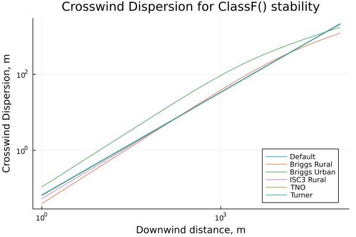
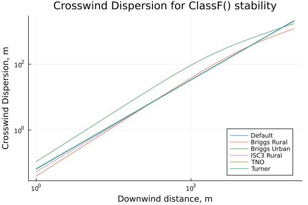

Equation Sets
The various dispersion models each depend upon several parameters which are themselves, often, correlations. For any given parameter there are several different correlations in the literature. To make this more transparent, sets of correlations from standard texts have been prepared (in addition to the default correlations), allowing the user to specify which set to use.
There are seven equation sets for plume models which define the correlations for windspeed, crosswind dispersion, and vertical dispersion:
DefaultSet– see the defition in plume modelsCCPSRural– AIChE/CCPS 1999CCPSUrban– AIChE/CCPS 1999ISC3Rural– US EPA 1995ISC3Urban– US EPA 1995TNOPlume– TNO Yellow Book (Bakkum and Duijm 2005)Turner– Dispersion parameters from Turner (1970) and Lees 1996, windspeed is the default
Mostly these reference a smaller set of power-law wind correlations and dispersion correlations. The specifc details are given below with more details on the particular correlations in the corresponding sections below.
| Equation Set | Wind | $\sigma_x$ | $\sigma_y$ | $\sigma_z$ |
|---|---|---|---|---|
DefaultSet | DefaultWind | Nothing | Defaultσy | Defaultσz |
CCPSRural | IrwinRural | Nothing | BriggsRuralσy | BriggsRuralσz |
CCPSUrban | IrwinUrban | Nothing | BriggsUrbanσy | BriggsUrbanσz |
ISC3Urban | ISC3UrbanWind | Nothing | BriggsUrbanσy | BriggsUrbanσz |
ISC3Rural | IrwinRural | Nothing | ISC3Ruralσy | ISC3Ruralσz |
TNOPlume | TNOWind | Nothing | TNOPlumeσy | TNOPlumeσz |
Turner | DefaultWind | Nothing | Turnerσy | Turnerσz |
There are four equation sets for puff models which define the correlations for windspeed, downwind dispersion, crosswind dispersion, and vertical dispersion:
DefaultPuffSet– see the defition in plume modelsCCPSPuffRural– AIChE/CCPS 1999CCPSPuffUrban– AIChE/CCPS 1999TNOPuff– TNO Yellow Book (Bakkum and Duijm 2005)
| Equation Set | Wind | $\sigma_x$ | $\sigma_y$ | $\sigma_z$ |
|---|---|---|---|---|
DefaultPuffSet | DefaultWind | CCPSPuffσx | CCPSPuffσy | CCPSPuffσz |
CCPSPuffRural | IrwinRural | CCPSPuffσx | CCPSPuffσy | CCPSPuffσz |
CCPSPuffUrban | IrwinUrban | CCPSPuffσx | CCPSPuffσy | CCPSPuffσz |
TNOPuff | TNOWind | TNOPuffσz | TNOPuffσy | TNOPuffσz |
An equation set intended for puff models can be used for a plume model, but not vice-versa unless otherwise noted. Equation sets for plume models do not typically define a downwind dispersion, $\sigma_x$, and without some additional details on how to handle that there is no way to calculate puff dispersion.
It is possible to define one's own equation set by either mixing and matching existing correlations. For example, suppose I want to use the TNO puff dispersion correlations but with the Irwin rural powerlaw wind profile:
using GasDispersion
MyPuffSet = BasicEquationSet(IrwinRural(),TNOPuffσz(),TNOPuffσy(),TNOPuffσz())BasicEquationSet{IrwinRural, TNOPuffσz, TNOPuffσy, TNOPuffσz}(IrwinRural(), TNOPuffσz(), TNOPuffσy(), TNOPuffσz())All of the pre-defined equation sets are simply constants set to a particular instance of BasicEquationSet. Additional correlations can be added for windspeed or dispersion, by overloading the internal functions windspeed, downwind_dispersion, crosswind_dispersion, and vertical_dispersion, but this can be dangerous as the internals are subject to change without notice. A better choice is to open an issue or pull request through GitHub, and it can be added to the next release.
Example Usage
Using the same example scenario as the basic gaussian plume, we can explore the sensitivity to choice of model parameters using equation sets. Starting with the scenario definition:
using GasDispersion
propane = Substance(name="propane",
molar_weight=0.044096, # kg/mol
liquid_density=526.13, # kg/m³
k=1.142,
boiling_temp=231.02, # K
latent_heat=425740, # J/kg
gas_heat_capacity=1678, # J/kg/K
liquid_heat_capacity=2520) # J/kg/K
Patm = 101325 # Pa
P1 = 4e5 + Patm # Pa
T1 = 25 + 273.15 # K
scn = scenario_builder(propane, JetSource();
phase = :gas,
diameter = 0.01, # m
dischargecoef = 0.85,
temperature = T1, # K
pressure = P1, # Pa
height = 3.5) # m, height of hole above the groundThe plume using the default equation set is simply this
dflt = plume(scn, GaussianPlume(), DefaultSet)For each of the plume equation sets we can easily create corresponding plume solutions
ccps_rurl = plume(scn, GaussianPlume(), CCPSRural)ccps_urb = plume(scn, GaussianPlume(), CCPSUrban)isc3_rurl = plume(scn, GaussianPlume(), ISC3Rural)isc3_urb = plume(scn, GaussianPlume(), ISC3Urban)tno = plume(scn, GaussianPlume(), TNOPlume)turner = plume(scn, GaussianPlume(), Turner)All of these plumes can then be plotted, to better visualize what is going on. These are identical plume models with the only differences being the windspeed correlation and the dispersion correlations.
Windspeed
The most common windspeed profile is a power-law relationship:
\[ u = u_{R} \left( z \over z_{R} \right)^{p}\]
There are four power-law correlations for windspeed:
DefaultWind– see the defition in release scenariosIrwinRural– Irwin 1979IrwinUrban– Irwin 1979ISC3UrbanWind– US EPA 1995
| Stability Class | DefaultWind | IrwinRural | IrwinUrban | ISC3UrbanWind |
|---|---|---|---|---|
| A | 0.108 | 0.07 | 0.15 | 0.15 |
| B | 0.112 | 0.07 | 0.15 | 0.15 |
| C | 0.120 | 0.10 | 0.20 | 0.20 |
| D | 0.142 | 0.15 | 0.25 | 0.25 |
| E | 0.203 | 0.35 | 0.40 | 0.30 |
| F | 0.253 | 0.55 | 0.60 | 0.30 |
The ISC3Urban correlation is the same as the IrwinUrban except for stable atmospheres (class E and F)
There are two correlations which uses a logarithmic profile based on Monin-Obukhov similarity theory.
TNOWind– TNO Yellow Book (Bakkum and Duijm 2005), with a default surface roughnes of 0.1mBusingerWind– Businger et al. 1971
The SimpleAtmosphere type does not define a surface roughness, however wind profiles based on Monin-Obukhov similarity theory require a surface roughness to function. The system wide default is 1.0m, unless otherwise specified.
Plume Dispersion
Plume dispersion parameters, $\sigma_y$ and $\sigma_z$ are functions of downwind distance and can take many different forms from simple power-law relations to complex piece-wise functions. The plume equation sets implement the plume dispersion parameters along with the windspeed correlations given above.
Crosswind Dispersion
There are six correlations for the crosswind dispersion.
Defaultσy– see the defition in plume modelsBriggsRuralσy– Briggs 1973, Appendix DBriggsUrbanσy– Briggs 1973, Appendix DISC3Ruralσy– US EPA 1995, equation 1-32 and Table 1-1TNOPlumeσy– TNO Yellow Book (Bakkum and Duijm 2005), Table 4-8Turnerσy– A set of digitized curves based on Turner (1970), as presented in Lees 1996
The Briggs correlations are in terms of $R$ and have been converted to $\sigma$ per Griffiths (1994).
 

Vertical Dispersion
There are six correlations for the crosswind dispersion.
Defaultσz– see the defition in plume modelsBriggsRuralσz– Briggs 1973, Appendix DBriggsUrbanσz– Briggs 1973, Appendix DISC3Ruralσz– US EPA 1995, equation 1-34 and Table 1-2TNOPlumeσz– TNO Yellow Book (Bakkum and Duijm 2005), Table 4-8 with a default surface roughnes of 0.1mTurnerσz– A set of digitized curves based on Turner (1970), as presented in Lees 1996
The Briggs correlations are in terms of $R$ and have been converted to $\sigma$ per Griffiths (1994).
Puff Dispersion
Puff dispersion parameters, $\sigma_x$, $\sigma_y$ and $\sigma_z$ are functions of the downwind distance to the cloud (puff) center and are generally given as power law relations. There are many fewer sources for these. The Puff equation sets implement these dispersion parameters along with the windspeed correlations given above.
Downwind Dispersion
There two correlations for the downwind dispersion.
CCPSPuffσx– AIChE/CCPS 1999, Table 2-13TNOPuffσx– TNO Yellow Book (Bakkum and Duijm 2005), pg 4.75
Crosswind Dispersion
There two correlations for the crosswind dispersion.
CCPSPuffσy– AIChE/CCPS 1999, Table 2-13TNOPuffσy– TNO Yellow Book (Bakkum and Duijm 2005), pg 4.75
Vertical Dispersion
There two correlations for the vertical dispersion.
CCPSPuffσz– AIChE/CCPS 1999, Table 2-13TNOPuffσz– TNO Yellow Book (Bakkum and Duijm 2005), pg 4.75
Though in practice there are only two: the CCPS correlations do not distinguish between urban and rural locations for puff dispersion, and the default correlations are the CCPS correlations.